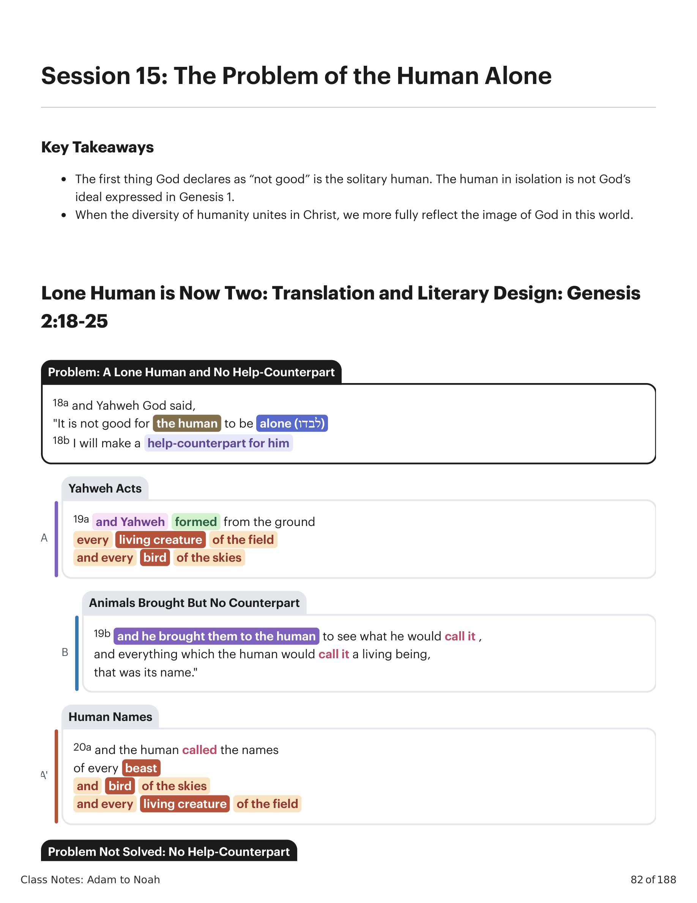
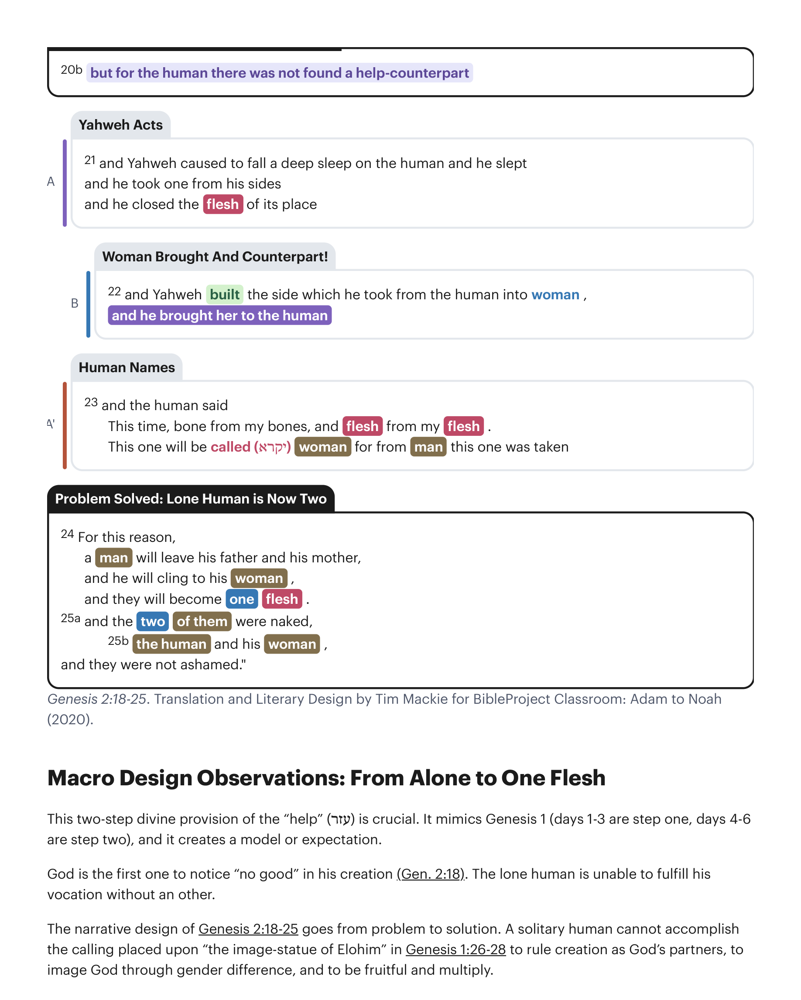

Esta provisão divina em duas etapas do "auxílio" (עזר) é crucial. Ela imita Gênesis 1 (dias 1-3 são o primeiro passo, dias 4-6 são o segundo passo), e cria um modelo ou expectativa. Deus é o primeiro a notar "não bom" em sua criação (Gn 2:18). O humano solitário é incapaz de cumprir sua vocação sem um outro. O design narrativo de Gênesis 2:18-25 vai do problema à solução. Um humano solitário não pode realizar o chamado colocado sobre "a imagem-estátua de Elohim" em Gênesis 1:26-28 de governar a criação como parceiros de Deus, de imaginar Deus através da diferença de gênero, e de ser frutífero e multiplicar.This two-step divine provision of the "help" (עזר) is crucial. It mimics Genesis 1 (days 1-3 are step one, days 4-6 are step two), and it creates a model or expectation. God is the first one to notice "no good" in his creation (Gen. 2:18). The lone human is unable to fulfill his vocation without an other. The narrative design of Genesis 2:18-25 goes from problem to solution. A solitary human cannot accomplish the calling placed upon "the image-statue of Elohim" in Genesis 1:26-28 to rule creation as God's partners, to image God through gender difference, and to be fruitful and multiply.

Para cumprir esta tarefa, a família humana deve simultaneamente tornar-se "muitos" e "um/unificada", e deve fazer tudo isso como uma imagem de Deus.To fulfill this task, the human family must simultaneously become "many" and "one/unified," and they must do all of this as an image of God.
Gênesis 2:24 (NAA): "Portanto, deixará o homem a seu pai e a sua mãe, e apegar-se-á à sua mulher, e serão ambos uma só carne." Gênesis 2:24 aborda uma questão fundamental sobre relacionamentos humanos: Por que uma pessoa deixaria seu relacionamento biológico mais próximo (uma criança aos seus pais) e se uniria àquele que não é da sua família? A afirmação de Gênesis 2:24 é que o casamento supera esta divisão biológica e recupera um estado original, unificado da humanidade. A mulher não é uma "ajudante" ou simplesmente uma parceira de acasalamento em Gênesis 2. Ela é metade dele e ele é metade dela; somente juntos podem tornar-se a humanidade unificada que Deus nos chamou a ser. O "uma só carne" de Gênesis 2:24 transcende a união do ato sexual (embora seja uma maneira pela qual a unidade "uma só carne" possa ser experimentada). É um exemplo primordial de como dois humanos que são genuínos outros um para o outro podem experimentar unidade e totalidade. Observe os papéis altamente surpreendentes do homem e da mulher em Gênesis 2:24. É o homem quem deixa sua família para se unir a uma estranha biológica, sua esposa, para criar uma nova família. Esta formulação é o oposto de todos os casamentos na Bíblia Hebraica, onde a mulher deixa sua família para se unir ao homem (p.ex. Rebeca, Raquel e Leia, etc.). As palavras "abandonar" (‘azab / עזב) e "apegar-se" (dabaq / דקב) são termos de pacto que falam do abandono de laços anteriores e do "apego" ao seu parceiro de pacto (Dt 4:4; 10:20; 11:22; 22:16).Genesis 2:24 (NASB): "For this reason a man shall leave his father and his mother, and cling to his wife; and they shall become one flesh." Genesis 2:24 addresses a foundational question about human relationships: Why would a person leave their closest biological relationship (a child to their parent) and join themselves to one who is not in their family? The claim of Genesis 2:24 is that marriage overcomes this biological divide and recovers an original, unified state of humanity. The woman is not a "helper" or simply a mating partner in Genesis 2. She is half of him and he is half of her; only together can they become the unified humanity that God has called us to be. The "one flesh" of Genesis 2:24 transcends the union of the sexual act (though it is one way the "one flesh" unity may be experienced). It is a prime example of how two humans who are genuine others to one another may experience unity and oneness. Notice the highly surprising roles of man and woman in Genesis 2:24. It is the man who leaves his family to join a biological stranger, his wife, to create a new family. This formulation is the opposite of every marriage in the Hebrew Bible, where the woman leaves her family to join the man (e.g. Rebekah, Rachel and Leah, etc.). The words "abandon" (‘azab / עזב) and "cling" (dabaq / דקב) are covenantal terms that speak to the forsaking of previous bonds and "clinging" to one's covenant partner (Deut. 4:4; 10:20; 11:22; 22:16).
Gênesis 1-11 seguirá explorando a fratura desta unidade ideal em todos os níveis da família humana, preparando a expectativa do leitor de que Deus novamente resolverá esta situação de "não bom" de uma humanidade incapaz de fazer o que Deus a chamou para fazer.Genesis 1-11 will go on to explore the fracturing of this ideal unity on all levels of the human family, setting up the reader's expectation that God will again solve this "no good" situation of a humanity unable to do what God has called them to do.
Para reparar estas distorções em camadas da humanidade ideal unificada, narrativas futuras explorarão como a família humana fraturada se torna uma novamente através do compromisso do pacto.To repair these layered distortions of the ideal unified humanity, future narratives will explore how the fractured human family becomes one again through covenant commitment.
Esta cena primeiro permite que o humano chegue à sua própria consciência da solidão. Quando Deus "traz" os animais ao humano, podemos inferir que ele observa que eles vêm em pares. A próxima repetição deste motif, quando Deus traz os animais a Noé e à arca, enfatiza que os animais vêm "dois a dois" (Gn 6:19-20; 7:2-3).This scene first allows the human to come to their own awareness of the solitude. When God "brings" the animals to the human, we can infer that he observes that they come in pairs. The next repetition of this motif, when God brings the animals to Noah and the ark, emphasizes that animals come "two by two" (Gen. 6:19-20; 7:2-3).
"Apesar da identificação por Deus da necessidade do homem, há um atraso em sua provisão: contrasta com o cumprimento instantâneo da palavra divina no capítulo 1. Este deflectir cria suspense. Ele nos permite sentir a solidão do homem. Todos os animais são trazidos diante dele, e vemos ele olhando para cada um na esperança de que fizesse um companheiro adequado para o homem. Ber. Rab. 17:5 retrata os animais passando em pares e o homem comentando: 'Tudo tem seu par, mas eu não tenho par.' O patos é intensificado na ênfase da narrativa no fato de que os animais, como o homem (v 7), são formados da terra (v 19), e, como ele, são 'criaturas viventes'. Além disso, a palavra para 'animal' e 'vivo', ḥayyāh, antecipa 'Eva', ḥawwāh. Embora em hebraico os nomes destas criaturas soem tão semelhantes ao de Eva, elas não são o que o homem procura. Apesar da superioridade do homem sobre as outras criaturas, demonstrada por seu nomear delas (dar um nome a algo é afirmar autoridade sobre ele; cf. 1:26, 28), nenhuma ajudante adequada é encontrada.""Despite God's identification of man's need, there is a delay in his provision: contrast the instantaneous fulfillment of the divine word in chapter 1. This hold-up creates suspense. It allows us to feel man's loneliness. All the animals are brought before him, and we see him looking at each one in the hope it would make a suitable companion for man. Ber. Rab. 17:5 pictures the animals passing by in pairs and man commenting, 'Everything has its partner but I have no partner.' The pathos is heightened in the narrative's emphasis on the fact that the animals, like man (v 7), are shaped from the land (v 19), and, like him, are 'living creatures.' Furthermore, the word for 'animal' and 'living,' ḥayyāh, anticipates 'Eve,' ḥawwāh. Though in Hebrew these creatures' names sound so similar to Eve's, they are not what man is looking for. Despite man's superiority to the other creatures, demonstrated by his naming of them (to give a name to something is to assert authority over it; cf. 1:26, 28), no suitable helper is found."
Wenham, Gordon J. (1987). World Biblical Commentary, Vol. 1: Genesis 1-15. Thomas Nelson.Wenham, Gordon J. (1987). World Biblical Commentary, Vol. 1: Genesis 1-15. Thomas Nelson.
"[Alguns] comentaristas consideram que esta cena implica que o SENHOR Deus fez, por assim dizer, várias tentativas malsucedidas, criando vários tipos de criaturas e passando-as em revista diante de Adão, para ver se o homem acharia em uma delas uma ajudante correspondente a ele; mas tudo foi em vão, pois nenhuma delas o satisfez. Esta interpretação é inaceitável pelas seguintes razões: 1) Seria estranho declarar que Deus não entendeu, por assim dizer, o que o homem entendeu, que entre os animais não havia nenhum ... correspondente a ele ... também é inconcebível que o experimento tenha sido realizado com todas as bestas do campo e todas as criaturas voadoras do ar sem exceção, isto é, mesmo com criaturas mais diferentes do homem. 2) Está explicitamente escrito no v. 20 que o propósito do SENHOR Deus em trazer as criaturas diante do homem era apenas ver como ele as chamaria. Parece que o texto pretende nos dizer apenas que o SENHOR Deus quis engendrar no coração do homem um desejo por uma ajudante que lhe correspondesse exatamente. Quando o homem inspecionasse todas as espécies de animais por sua vez, e achasse que algumas delas eram de fato aptas para servi-lo e ajudá-lo em alguma medida, mas que ainda não havia entre elas uma que fosse seu semelhante keneghdō, ele se tornaria consciente de sua solidão e anelaria por uma que pudesse ser sua verdadeira companheira ... no pleno sentido das palavras, e, em consequência, estaria pronto para apreciar e prezar o dom que o SENHOR Deus lhe daria.""[Some] commentators consider that this scene implies that the Lord God made, as it were, a number of unsuccessful attempts, by creating various kinds of creatures and by passing them in review before Adam, to see if the man would find in one of them a helper corresponding to him; but it was all in vain, for not one of them satisfied him. This interpretation is unacceptable for the following reasons: 1) It would be strange to declare that God did not understand, so to speak, what man understood, that among the animals there was none ... corresponding to him ... it is [also] inconceivable that the experiment was carried out with all the beasts of the field and all the flying creatures of the air without exception, that is, even with creatures that were most unlike man. 2) It is explicitly written in v. 20 that the purpose of the Lord God in bringing the creatures before man, was only to see what he would call each one. It would seem that the text intends to tell us only that the Lord God wished to engender in the heart of man a desire for a helper who should correspond to him exactly. When the man would inspect all the species of animals in turn, and would find that some of them were indeed suited to serve him and help him to some extent, but yet there was not one among them that was his like keneghdō, he would become conscious of his loneliness and would yearn for one who could be his true companion ... in the full sense of the words, and, in consequence, he would be ready to appreciate and cherish the gift that the Lord God was to give him."
Cassuto, Umberto (1961). A Commentary on the Book of Genesis: Part I, From Adam to Noah. Hebrew University Magnes Press.Cassuto, Umberto (1961). A Commentary on the Book of Genesis: Part I, From Adam to Noah. Hebrew University Magnes Press.
Em Gênesis 1:1-2:3, a atividade criativa de Deus envolve nomear entidades, isto é, separá-las e conferir-lhes uma identidade e propósito distintos. Aqui, Deus convida o humano a imitar o ato criativo divino nomeando os animais. O retrato de Deus nesta cena é de um criador que quer compartilhar responsabilidade com sua criação para que ela se torne o que foi feita para ser. "Este retrato de Deus, o criador do céu e da terra, conduzindo todos os animais um a um, e então a mulher, a um encontro face a face com o 'adam, é verdadeiramente notável ... Deus o Criador coloca o divino self a serviço do 'bem' do ser humano ... O papel de Deus é colocar as várias possibilidades diante do humano, mas é a criatura que recebe a liberdade de decidir. Deus valoriza tanto a liberdade humana que Deus levará em conta a resposta humana livre desde dentro do processo criativo ao moldar o futuro ... O nomear de cada criatura pelo ser humano destina-se a ser paralelo ao nomear divino em Gn 1:5-10. Este ato não é perfunctório, como rotular as gaiolas de um zoológico. Nomear é parte do próprio processo criativo ... decisões humanas se mostram importantes para o desenvolvimento contínuo da ordem criada."In Genesis 1:1-2:3, God's creative activity involves naming entities, that is, separating them out and conferring upon them a distinct identity and purpose. Here, God invites the human to imitate the divine creative act by naming the animals. The portrait of God in this scene is of a creator who wants to share responsibility with his creation so that it can become what it is made to be. "This portrayal of God, the creator of heaven and earth, leading all the animals one by one, and then the woman, to a face-to-face meeting with the 'adam, is truly remarkable ... God the Creator places the divine self at the service of the 'good' of the human being ... God's role is to place the various possibilities before the human, but it is the creature that is given freedom to decide. God so values human freedom that God will take into account the free human response from within the creative process in shaping the future ... The human being's naming of each creature is meant to be parallel to the divine naming in Gen. 1:5-10. This act is not perfunctory, like labeling the cages of a zoo. Naming is a part of the creative process itself ... human decisions are shown to be important to the ongoing development of the created order."
Fretheim, Terence E. (2005). God and the World in the Old Testament: A Relational Theology of Creation. Abingdon Press.Fretheim, Terence E. (2005). God and the World in the Old Testament: A Relational Theology of Creation. Abingdon Press.
Resuma como os dois se tornando uma só carne em Gênesis 2:24 é uma imagem do plano supremo de Deus para a humanidade.Summarize how the two becoming one flesh in Genesis 2:24 is a picture of God's ultimate plan for humanity.